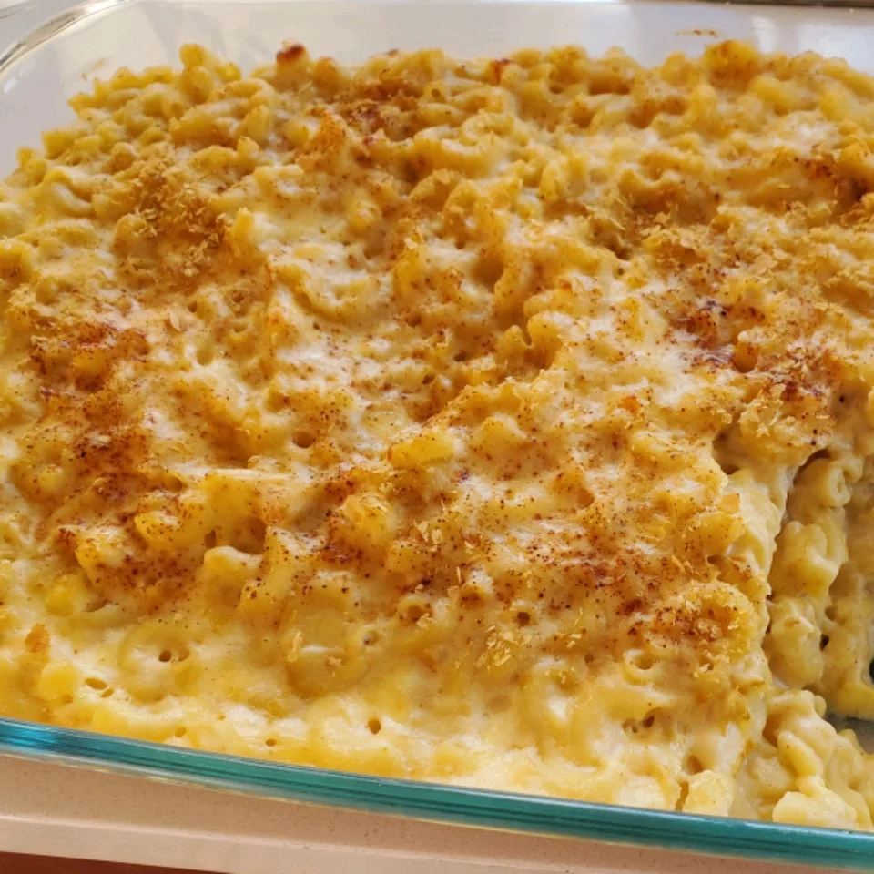

Homemade Mac and Cheese

Description
A nice, rich mac and cheese recipe that could be served with salad for a great meatless dinner.
Ingredients
- 8 ounces uncooked elbow macaroni
- 2 cups shredded sharp cheddar cheese
- 1/2 cup grated parmesan cheese
- 3 cups milk
- 1/4 cup butter
- 2 1/2 tablespoon all-purpose flour
- 2 tablespoons butter
- 1/2 cup bread crumbs
- 1 pinch parika
Steps
- Cook macaroni according to the package directions. Drain.
- In a saucepan, melt butter or margarine over medium heat. Stir in enough flour to make a roux. Add milk to roux slowly, stirring constantly.
Stir in cheeses, and cook over low heat until cheese is melted and the sauce is a little thick. Put macaroni in large casserole dish, and
pour sauce over macaroni. Stir well.
- Melt butter or margarine in a skillet over medium heat. Add breadcrumbs and brown. Spread over the macaroni and cheese to cover.
Sprinkle with a little paprika.
- Bake at 350 degrees F (175 degrees C) for 30 minutes. Serve.